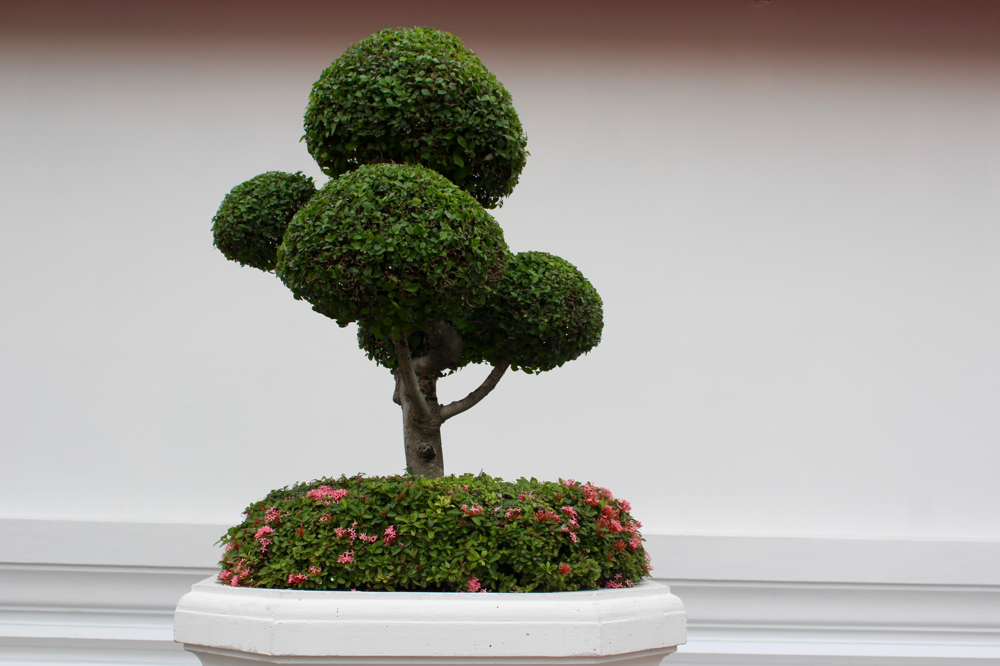

Bonsai are the small plants that is grown in a container and presented in such a way that makes it look even more preetier than the plants that are grown in wild.It is a traditional japenese art It became more widely enjoyed around three centuries later, during the Edo period (1603–1867). Growing bonsai has been a hobby for many japenese people and became one of the gesture to show love towards nature.
It is a straight-forward style that most resembles a regular full sized tree in its mature native state.The aim of the style is to closely recreate a ‘perfect’ version of the natural form of your bonsai tree variety, in a miniaturized version.
This style is one of the most dramatic bonsai style but also difficult to achieve. it takes lots of time and dedication so it is rarely seen. It is quiet similiar to the slanting style expect for appearence. Naturally it is found in exposed environments such as on mountain crests, ridges or coastal areas.
It is also popurarly known as Japanese white pine which is evergreen plant
for the family.It is basically grown in mountain region.It has been cultivated in Japan and China
for
centuries. to grow this one need lots of patience because to be fully grown it can take upto 10years.
It is also called Slanting Bonsai Style it is one of the popular style hich emulates the ideals of a tree in nature which has been buffeted by the natural elements such as wind and storms.

Daily life and Business are inter-related with each other directly or indirectly.I believe entrepreneur often plays a significant role in people's daily life because they provides people with food,shelter,transportation and many more.Business can be important source of employment.It has capacity to provide overall quality development of humans.
Technology has played a significant role in both daily life and business. Technology has brought revolution in they way of how people consume social medias. The whole world is coverting into digital.everything is going digital.From ordering food to ordering clothes online, bookoing the tickets of bus,plane,ships just with one click technology has come up the long way and plays an important role in daily life.it has helped people connecting to each other by living in different corner of the world.
Everything has its own advantages and disadvantages
here are some points that clarify how technology has affected our daily life which includes

4.9Billion people use internet and use different technologies for a start-up. Technology plays a vital role in business aswell. When technology becomes more advance,it's role with the businesses will continue to grow. Technology has revolutionized business. It is more easy and reliable for companies to do business across the world with online marketing website or selling products online by creating e-commerce webpage. It is even more easier to store thousands of data of employee, product or different paperwork as well as other important data'sof the organization and can be stored forever which is 100% safe.From designing a company logo to desiging a product technology has brought a big impact in business in today's context.